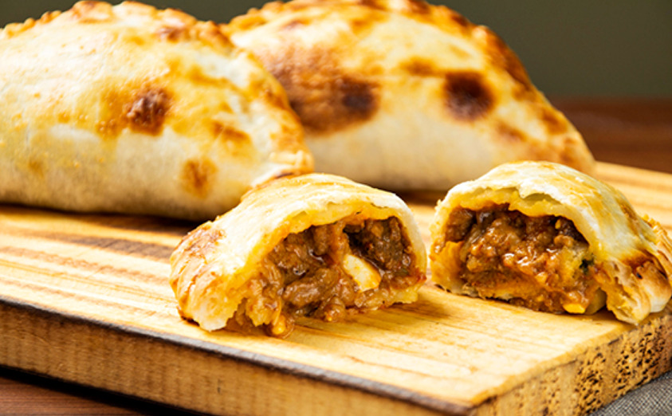

Empanada tucumana
Como preparar la mejor empanada de la región

En esta página te vamos a enseñar como preparar la mejor empanada tucumana paso a paso
Ingredientes
- 12 tapas de empanada
- 1 suprema de pollo
- 1 cebolla grande
- ¼ morrón
- 2 ramas de cebolla de verdeo
- 10 aceitunas
- 1 cucharada sopera de aceite
- 1 cucharada sopera de manteca
- 1 huevo
- 1 cucharadita de ají molido
- 1 cucharadita de orégano
Paso a paso para realizar la receta!
- Segui las instrucciones y compartí tus resultados!